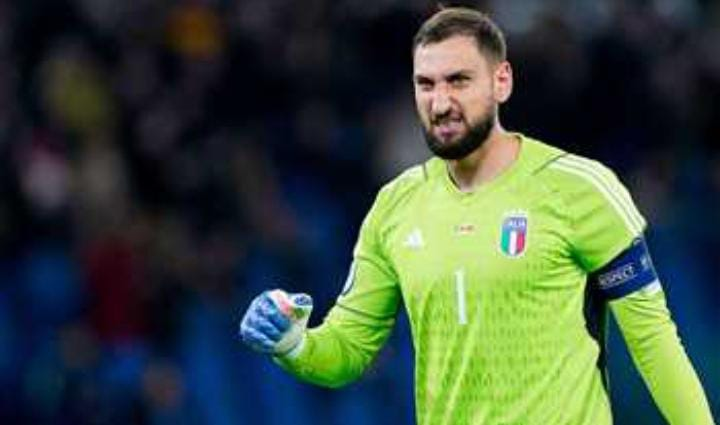

هل اقترب دوناروما من مانشستر سيتي؟
هل اقترب دوناروما من مانشستر سيتي؟.. رومانو: إيدرسون إلى فنربخشةرومانو: دوناروما يوافق على الشروط الشخصية مع مانشستر سيتي.. ومفاوضات جارية بين الناديينمن سيحظى بتوقيعه؟ دوناروما يودع سان جيرمانرغم قرار رحيله.. دوناروما يتدرب مع سان جيرمان
وأشار التقرير إلى أن اللاعب سوف يخضع للكشف الطبي عصر اليوم تمهيدا لإتمام الانتقال بشكل رسمي.
ووافق دوناروما على الشروط الشخصية في تعاقده مع مانشستر سيتي
وكان قد استبعد لويس إنريكي المدير الفني لباريس سان جيرمان حارس مرمى الفريق جيانلويجي دوناروما من القائمة المستدعاه لمواجهة توتنام في السوبر الأوروبي
وكذلك غاب عن مواجهات باريس سان جيرمان في الدوري الفرنسي هذا الموسم
وأفادت الصحيفة أن رحيل دوناروما من باريس سان جيرمان جاء بعد تدهور العلاقات بينهما بسبب الخلاف بشأن تجديد العقد الذي ينتهي بنهاية الموسم الجديد
وكان باريس سان جيرمان قد أعلن في وقت سابق التعاقد مع لوكاس شوفالييه حارس مرمى ليل خلال فترة الانتقالات الصيفية الحالية
وحسب التقارير الصحفية فإن باريس سان جيرمان سدد 40 مليون يورو من أجل ضم الحارس البالغ من العمر 23 عاما
,
وحصد شوفالييه جائزة أفضل حارس في الدوري الفرنسي الموسم السابق